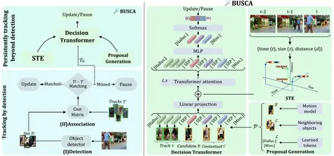

Сегодня разбираем статью с ECCV’24, в которой предложили метод улучшения онлайн-трекинга BUSCA. Это надстройка над любыми современными трекерами в парадигме Tracking-by-Detection (TbD), помогающая не терять треки при пропуске объектов детектором.
В подходах TbD объекты сначала детектируют, затем соотносят с существующими треками. Проблема в том, что даже лучшие детекторы периодически теряют объекты, особенно при их низкой видимости. Из-за этого треки прерываются. BUSCA решает эту проблему, продолжая треки даже без детекций.
Архитектура BUSCA
В основе метода — Decision Transformer, работающий полностью в онлайн-режиме (без изменения прошлых результатов или доступа к будущим кадрам).
После стандартного сопоставления детекций с треками, несматченные треки обрабатываются BUSCA, которая анализирует:
— Candidate proposal B: прогнозируемую позицию объекта с помощью фильтра Калмана;
— Contextual proposals C: Q=4 ближайших объекта из успешно отслеживаемых треков на текущем кадре (для учёта окружения);
— Learned tokens L: специальные токены [Halluc.] для обнаружения искажённых треков и [Miss.], когда объект покинул сцену или все предложения неподходящие.
Обработка токенов различается:
- Трековые наблюдения (несколько последних наблюдений из несматченного трека), Candidate и Contextual proposals проходят через ResNet-50 для извлечения 512-мерных визуальных признаков;
- Learned tokens и разделительный токен [SEP] инициализируются случайно и обучаются совместно с остальной архитектурой.
Все токены получают специальное пространственно-временное кодирование (STE), отражающее относительные время, размеры и расстояние до последнего наблюдения трека.
Затем Decision Transformer обрабатывает все токены вместе. Полученные представления предложений проходят через MLP-слой для генерации их вероятностей. Если выбирается candidate B — трек продолжается с обновлёнными координатами, в остальных случаях — ставится на паузу.
Эксперименты
BUSCA особенно эффективна для объектов с низкой видимостью и увеличивает среднюю длину треков. Метод обучался только на синтетических данных (MOTSynth) и работает со скоростью около 45 мс на кадр на NVIDIA RTX GPU.
BUSCA протестирована на пяти трекерах (ByteTrack, StrongSORT, GHOST, TransCenter, CenterTrack) и улучшила все ключевые метрики на MOT16, MOT17 и MOT20.
Разбор подготовила
CV Time
